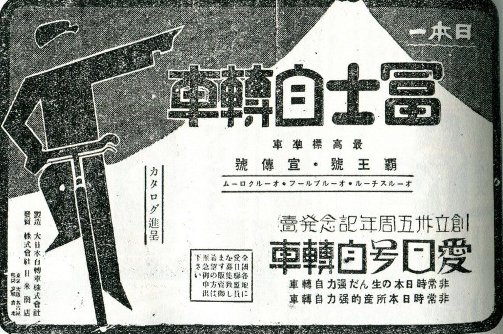
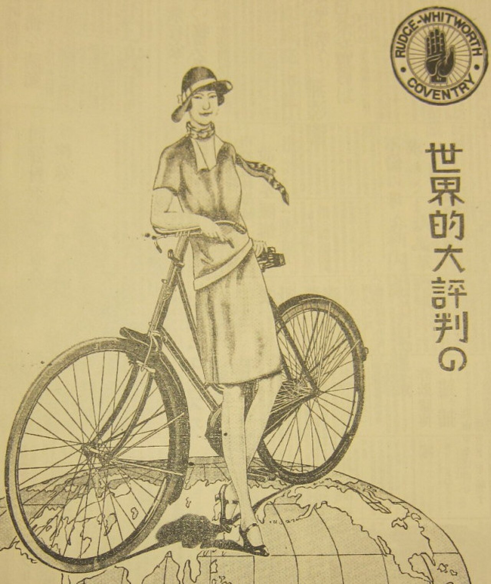

展區二
老鐵馬的記憶
在機車和汽車還不普遍的年代，一台腳踏車就是一家人的「交通車」。上班、送貨、載小孩上學，都靠它。
那個年代的腳踏車
- 主要代步工具1940～1950 年代，腳踏車是民眾最主要的交通工具。
- 用途很多公務員騎車上班，郵差和雜貨店用它送信、送貨。
- 一台多少錢1957 年一台約 940 元，小學老師月薪大約 300 元，要三個多月薪水！
- 長什麼樣子外型沉重，後面一塊長方形鐵板，載貨載人都可以。

點點看：老鐵馬的零件
點黃色圓點或下面的按鈕，比較「以前」和「現在」。
以前
現在
老腳踏車線稿為程式繪製的示意圖。最好的展品是長輩家裡的真鐵馬，請組員拍照替換（見下方待補）。
腳踏車的時光隧道
- 1899富士自轉車品牌在日本創立，1920 年代後期成為日本最受歡迎的腳踏車；日治時期的臺灣報紙也看得到它的廣告。
- 1940～1950 年代腳踏車是民眾主要的代步工具，要繳使用牌照稅、掛車牌才能上路。
- 1957政府物資局賣福祿牌腳踏車，一台 940 元（分期 960 元），限公教人員與勞工；當時小學老師月薪大約 300 元。
- 1971（民國 60 年）隨著機車、汽車普及，腳踏車使用牌照稅停徵。
- 1970 年代美國興起自行車風潮，帶動臺灣自行車工業蓬勃發展。
- 今天騎腳踏車成了休閒與健康的生活方式：集集環鎮自行車道暨綠色隧道全長 17.52 公里。


記憶分享牆
長輩的鐵馬故事
請訪問一位長輩（家人、集集租車店老闆都可以），寫 150 字左右的鐵馬故事，並拍一張老腳踏車照片（車牌、鈴鐺、後座鐵架特寫更好）。拍攝前先徵求同意。也請問問「以前晚上騎車怎麼照明」，補進上面「車燈」的說明。